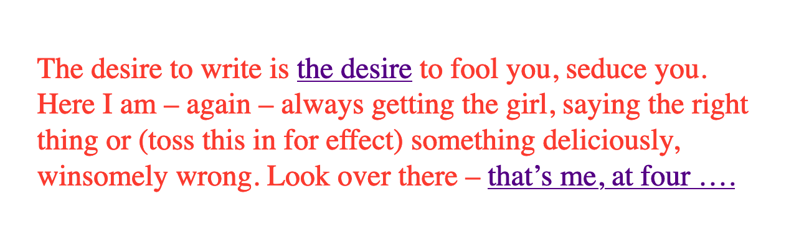

Table of Contents
1 intro

/The desire to write is the desire to fool you, seduce you. Here I am - again - always getting the girl, saying the right thing or (toss this in for effect) something deliciously, winsomely wrong. Look over there - that's me, at four…/
Caitlin Fisher's electronic work, These Waves of Girls, tempts the reader through its pages with links to seductive phrases like "the desire" or "that's me, at four…" ("desire_to_write.htm"). Though they are associative in nature, supporting the work's de-centralized formal structure, the links also defer narrative coherence within the story, a sexual coming of age of a young lesbian woman named Tracey. Clicking through a few episodes, the text reveals itself to be, like much of the "hypertext fiction" of the time, disorienting. The links offer a profusion of narrative paths that disrupt the relationship between cause and effect, halting the narrative progression in what James Pope describes as "a baffling range of choices for movement which actually led to a stifling of movement altogether" (11).

In addition to dogging this perpetual deferral of narrative coherence, the reader also follows the narrator's elusive promise of sexual discovery, of which she only ever gets part. One highly eroticized scene, for example, uses linking to cast the object of Tracey's desire into doubt. Here, the 15-year-old Tracey performs a gymnastics "beam routine" for an older man:
'_I don’t want to have sex_,’ I say. ‘Not with you.’
But then, not wanting to disappoint, ‘I could do my beam routine.’
I take off my clothes and, fifteen, mount the line of the carpet to perform my entire junior beam routine, handstand press, two backhandsprings included. He jerks off. Dismount.
I hurry into my clothes and head home to Vivian (_who loves me, but not as much as I love her_). For years I worry that the shoe salesman was really disappointed, stuck with a fifteen year old virgin gymnast rather than a real bad girl. "Beamroutine8.htm"
The beam routine performance enacts a tension between touch and desire that drives not only the narrative story but also the reader as she clicks her way through the links. In compensating for the sex act, the visual performance of beam routine suggests a desire that is inaccessible to touch in two ways. First, on the level of narrative form, the object of desire is cast into doubt by the phrase, "I don't want to have sex, not with you," instead implying her friend Vivan, to whom Tracey declares her love earlier in the episode ("Our third daiquiris arrive and, my hand hot on her waist, "I tell her I love her" (“beamroutine5.htm”)), as the object of desire. However, on the level of format, desire's referent is destabilized by the text's associative structure. The link to this same sentence, "I don't want to have sex," leads to a page about another love object, Jennie Winchester:
I’m in bed with Jennie Winchester and I realize she wants me to undo her pants. She needs to be home by 11:00 and needs to leave my place by 10:45. I’m kissing her but opening my eyes at intervals to catch the clock. At exactly 10:43 I unbutton her Levis and shove my hand inside, barely undoing the zipper. “I’m in bed…”
The association between Jennie and Vivian, both of whom are depicted as highly desirable partners throughout the work, and the phrase "I don't want to have sex," throws Tracey's desire into doubt. The links here create a disorienting effect where the reader constantly loses context even as she familiarizes herself with the events of the story. Here, the difficulty in "grasping" the story on a physical level, on the level of format, in clicking through the various episodes, continually proves desire to be a moving target on the level of narrative form. The links thus reinforce a frustrated relationship to touch across the work, where the reader clicks through a story she will never fully grasp, to read a story about a desire that is never fully defined. The reader’s confusion in navigating through Waves, in re-interpreting fragments that had been previously integrated, reinforces desire, and queer desire in particular, as something elusive, a condition that is not fully intelligible.
I open with this work because it illustrates a foundational assumption for this dissertation–that digital media abstracts complex elements of queer identity, desire, and experience in text into formal possibilities for analysis. In Waves, for example, where desire is distributed across a network structure, the network becomes a formal device for exploring queer desire. This text puts into practice post-structuralist principles about the destabilization and de-centering of literary narrative in a continually branching network that shifts and scrambles the reader's sense of direction.1 Despite this apparent disorder, however, movement across the text is highly constrained by standards that rule all network connections, what Alexander Galloway refers to as network "protocol." Protocol operates mostly out of view, taking the form of technical standards like HTML that control the connection between pages in the story. The tension between this controlling structure and free movement within it recalls a condition of the network where, according to Galloway, "protocol is synonymous with possibility" (168). The same rules that confine and determine movement can also be used to subvert expected behavior in the network, to seek out what hackers call an exploit.
This project examines digital media for their constraints, particularly the ways they abstract textual expressions of sex, sexuality, and gender into digital forms. Then, I explore how these constraints might engage theories and concepts from the field of Queer Studies. The network story format as a controlling structure, for example, shares in the same principles that also influence the inception of Queer Studies with Judith Butler's Gender Trouble: Feminism and the Subversion of Identity in 1990. Butler's work establishes a denaturalization of sex, gender, and sexuality, famously exposing these categories as social constructions that precede and determine subjectivity rather than express it.2 Her work lays the groundwork for Queer Studies's fixation with seeking out exploits that make resistance possible within the matrix of power. Bringing this fixation to Waves, I would explore how network dynamics engage categories and norms that define and delineate sexuality in this text. How might the subject, who into intelligibility through the matrix of discourse, relate to protocol as a controlling structure?
1.1 Queer DH
This work is situated within an emerging field at the intersection of Digital Humanities (DH) and Queer Studies called Queer DH. While much of DH scholarship is enticed by what Stephen Ramsay describes as "the heightened objectivity made possible by the machine," or social science methodologies that verify, correct, or establish knowledge, Queer DH emphasizes instead how digital tools and methods might productively complicate the stability and legibility of knowledge (x). In doing so, Queer DH projects generally take one of two approaches: the first imagines alternative digital tools that reflect the complexity and nuances of real-world objects and phenomena, while the second approach deconstructs and critiques existing tools, maintaining that queerness is inherent to computational logic.
The first approach often consists of speculative or critical making projects that do not work in a functional sense. Rather, these projects problematize the constructed nature of technical objects. For example, Zach Blas and micha cárdenas’s computer program, transCoder, contains programming functions inspired by Queer Theory, such as the "destabilizationLoop," which "breaks apart any process that acts as a continuously iterating power," and "nonteleo()" which "strips any program of a goal-oriented result" ("libraries.txt"). According to the authors, this pseudo-code project explores how "cultural layer of queerness… acts upon and mutates mutually with the computer layer of algorithms, binary logic, data structures, code, software, and digitization" ("about.txt"). Another example of this speculative strand of Queer DH is "Queer OS," a project that posits a theoretical operating system Kara Keeling's call for an operating system "take[s] historical, sociocultural, conceptual phenomena that currently shape our realities in deep and profound ways, such as race, gender, class, citizenship, and ability… to be mutually constitutive with sexuality and with media and information technologies" (Keeling, "Queer OS"). This operating system, which imagines computational tools that "[do] not yet exist and may never come to exist [… do] not yet function and may never function" includes an interface that "disappears but is not naturalized," and "promiscuous" applications that "move and interact across platforms, devices, users, and geographical regions unrestricted" (Barnett et al). This project, the authors explain, goes beyond the desire to understand the workings of computation:
While our queer impulse may be to explode this [black] box, to lay bare its inner workings in a gesture of radical revelation, this desire to access the truth of the machine in that hardware, those circuits, these gates and switches is rooted in a drive toward depth, essence, and resolution that is antithetical to a QueerOS… a more productive interface would be expansive, proliferating the relationality allowed for by the inter-face, its inter-activity, its nature as that which is between or among, that which binds together, mutually or reciprocally. "Interface"
Speculative projects like transCoder and "Queer OS" share a suspicion that the "drive toward depth" in deconstructive analysis undermines the playful, elusive nature of a queer ethos.
In contrast to this speculative approach, another strand of Queer DH explores how technological systems and tools already engage queer concepts or methods of analysis. For example, work by Jacob Gaboury explores how "NULL" values evoke a distinctly queer logic, a "refusal to cohere, to become legible" (“Becoming NULL”). In database computing, NULL values stand in place for data that is missing but cannot be equated to zero, which represents a quantity of nothing. The NULL value identifies a presence or existence without giving any more information away, enacting simultaneously a "retreat from representation sits at the heart of queerness," and "a queer technics lying at the heart of the database form," ("Becoming NULL"). Moving from the database to data formats, Textual scholar Julia Flanders explores the "queerability" of the TEI (Text Encoding Initiative), a "markup language" for adding descriptive tags to textual data. Flanders deconstructs what she calls the data structure, an ordered and branching hierarchical format with strict naming conventions and boundaries for its data. Despite the rigidity of the TEI structure, which requires discrete data, Flanders argues that it offers a possibility for dissent, for expressing smooth information, through nesting and customization. According to scholars like Gaboury and Flanders, it is from within the structuring logics of computer software itself that queerness finds the space to operate.
Cutting between these approaches, this project first takes a deconstructive look at digital tools to seek out its constraint, that is, an effect that reduces or collapses the nuances of queer identity and experience into computable components. Then, I experiment with how this reductive aspect might be re-worked to bring back the details of queer identity and experience. Each chapter of my dissertation takes up a different constraint and explores how it can be re-deployed to reflect the multiplicity, fluidity, and dynamicity of queerness as it has been theorized by Queer Studies. Here I take the necessary disambiguation of programming logics and data structures, which process literary text into fixed and legible formats, toward revealing the complex and ambiguous forms of queer identity and experience. For example, in my second chapter on the TEI, or "text encoding," I take the rigid and hierarchical format of text encoding framework as an opportunity to think productively about hierarchical power structures. In the careful and minute work of encoding a text, where each element of is tagged within a document hierarchy, the editor grapples against the limitations of the compulsory categorization and containerization of data. To work within the limitations of the document hierarchy, I borrow from historiographical methods that represent absent or obscured data within totalizing structures. This close and careful work with text encoding allows me to make the connection between hierarchical data structures and power dynamics, offering an opportunity for rethinking my usage of the text encoding tool to foreground that which has been excluded from the system.
1.2 constraint and incommensurability
In order to seek out the computational constraints of each tool, this work unpacks some common assumptions about software and data. The first assumption is that software is politically neutral. Rather, as my analysis attempts to demonstrate, software encodes social ideology, specifically, hegemonic ideas for handling and organizing difference. For example, Tara McPherson's work traces how the operating system (OS), the foundational software that supports a computer's basic functioning, develops alongside 1960s and 1970s discourses on racial equality. She argues that "the organization of information and capital" in OS development resonates in the neoliberalist discourses that "distanc[ed] the overt racism of the past even as they contained and cordoned off progressive radicalism" (30). These systems, which partition and simplify complex processes into discrete components, evoke the ways that identity politics cordones off social groups into manageable units. While this organization works for identity politics, it also suggests how "Certain modes of racial visibility and knowing coincide or dovetail with specific ways of organizing data" (McPherson 24). She offers an example with the "rules" of UNIX (used to power MAC and Linux systems) philosophy:
Rule of Simplicity: Design for simplicity; add complexity only where you must.
Rule of Parsimony: Write a big program only when it is clear by demonstration that nothing else will do.
Rule of Transparency: Design for visibility to make inspection and debugging easier…
Rule of Representation: Fold knowledge into data so program logic can be stupid and robust. 26
The rules of "Simplicity" and "Parsimony" ensure that programs will be composed of small, interlocking parts that can be easily updated and transported to newer versions, while the rules of "Transparency" and "Representation" flatten nuance, ambiguity, and "raw" data into legible forms. McPherson explains that these rules correspond to ideological values for partitioning and organizing difference so that components can be independently modified without affecting the whole system. Moving to 21st century computing, hegemonic social ideologies spread into data gathering, surveilliance, and quantification practices. As computational power grows, the emphasis on efficiency perpetuates social stratifications from previous eras. As Ruha Benjamin asserts, "the road to inequity is paved with technical fixes," where newer technologies reproduce bias and discrimination under the guise of objectivity and progressivism (7). Benjamin explores how innovations in tracking, labelling, and monetizing data extend racist paradigms into new tools, such as databases for financial services that associate "black names" with criminality (Benjamin 5).3 Neutrality works by obscuring the principles driving tool development, as well as those who design and carry out those principles. Benjamin explains that "bias enters through the backdoor of design optimization in which the humans who create the algorithms are hidden from view" (5-6).
Another assumption has to do with data. This project resists the assumption that data can be gathered or processed in a "raw" or unaltered state. Because data always undergoes a transformation from real-world objects and phenomena into electronic format, its complexity and nuance is always already compromised. As a result, data structures like tabular and hierarchical formats represent data that has already been reduced. As Johanna Drucker explains, each piece of data carries with it the result of many interpretive decisions to varying degrees of opacity: "the graphical presentation of supposedly self-evident information… conceals these complexities, and the interpretative factors that bring the numerics into being, under a guise of graphical legibility" (par. 23). To highlight the reductions of data, a term that deceptively connotes that which is "given," Drucker proposes thinking of data as "capta," suggesting that which is taken. Drucker experiments with turning graphical metrics like lines and bars on a graph into expressive forms that break, blur, or bleed into one another. Here, objects are not discrete entities, but interact with the other objects in the visualization.
Unlike technological processes that seek to transform and manage information about real-world objects and phenomena into computable data, queer methods of analysis often seek to surface that which eludes capture or categorization. This dissertation defines queerness as an incommensurable quality that cannot be defined, captured, or fixed. According to José Esteban Muñoz, queer subjectivity is defined by a gap in identification, which he calls "disidentification," where subjectivity emerges in the failure to adhere to social expectations (Disidentifications 5).4 Within this gap, minority subjects find alternative pathways to connect with majority culture, "read[ing] onesself and one's own life narrative in a moment, object, or subject that is not culturally coded to 'connect' with the disidentifying subject" (Disidentifications 12). The experience of disidentification enables incommensurable elements of queerness to surface. I take this term "incommensurable" from Latina feminist philosopher Ofelia Schutte, who defines it as "a residue of meaning that will not be reached in cross-cultural endeavors" (56). Drawing from feminist postcolonial and poststructuralist concepts of alterity and difference, Schutte theorizes ambiguity as politically potent tool for cross-cultural communication. Schutte gives an example of how the incommensurable emerges in conversation:
In cross-cultural communication, each speaker may "say" something that falls on the side of the "unsaid" for a culturally differentiated interlocutor. Such gaps in communication may cause one speaker's discourse to appear incoherent or insufficiently organized. To the culturally dominant speaker, the subaltern speaker's discourse may appear to be a string of fragmented observations rather than a unified whole. 62
The point of isolating incommensurability is not to try to grasp or translate the vestige of lost meaning, but to recognize that gap as a space that constitutes queer experience and subjectivity. Schutte proposes that one embrace the strangeness of communication, attending to gaps and elisions, to the ways in which, for example, "the other's speech, or some aspect of it, resonates… as a kind of strangeness, as a kind of displacement of the usual expectation" (56). As a moment of failure, where meaning does not transfer, incommensurability describes a productive effect of the embodied experience of disidentificaiton. At its most extreme, incommensurability can manifest as what Chicana theorist Gloria Anzaldúa describes as el choque, a bodily experience of collision between two opposing forces. In the experience of the choque, the subject receives opposing cultural messages that incite a physical upheaval. Such moments of incommensurability, from the subtle and strange to the tumultuous, enable queerness to retain a quality of elusiveness–an elusiveness which cannot be measured, which resists the capture of technological protocols and processes.
1.3 queer form
This dissertation poses the incommensurable qualities of queer identity and experience against the necessary disambiguiation of technological processes. First, through digital methods like text analysis, text encoding, and media archaeology (discussed in more detail below), I seek out aspects of queerness that resist the transformation between technical registers, aspects that are constituted through lack or displacement. Then, I explore how digital tools might be reworked to engage with this resistance. To handle forms that resist this transformation, I combine the concepts of "deformance" from Digital Studies with "queer form" from Queer Studies. Deformance, coined by Jerome McGann and Lisa Samuels, describes the act of distorting, disordering, or re-assembling literary material, with the goal of estranging the reader from their familiarity of the text. McGann and Samuels explain that while electronic formats reduce complex literary elements into to computable components, they also confront the reader with new opportunities for analysis. By continually subscribing the text to new configurations, digital tools expose the semantic potentialities of the text's latent aspects, a quality that McGann refers to as a text's "quantum poetics," explaining that, "Aesthetic space is organized like quantum space, where the ‘identity’ of the elements making up the space are perceived to shift and change, even reverse themselves, when measures of attention move across discrete quantum levels" (McGann 183). This project uses deformance to surface a text's "queer form," a term I borrow from Kadji Amin, Amber Jamilla Musser, and Roy Pérez to describe "an aesthetics that moves persistently around the visual," "mak[ing] difference a little less knowable, visible, digestible" (235). Queer form, according to these theorists, "resist[s] the dictates of transparency normally required of non-normative subjects by illuminating the unseen" (233). My work seeks out such forms that figure the contour, boundary, and edge around the elusive identities, repressed desires, and other coded elements of queerness in text.
My dissertation includes a digital component that demonstrates in practice how these tools reveal, not solutions for understanding or "fixing" queerness, but opportunities for exploring its shifting permutations. As a practical application of my research, this digital component, called the Queer Text Toolkit, explores the interpretive possibilities of text analysis and text encoding procedures. Here, users can experiment firsthand with how reductive digital formats and processes, which collapse stylistic and formal expressions of gender, sex, and sexuality into computable data, can be redeployed toward creative exploration. The project consists of two applications, "queer distant reading" and "queer text encoding," which correspond to my first two chapters on text analysis and text encoding, respectively. The "queer distant reading" application is a command-line application that walks users through text analysis procedures inspired by Judith Butler’s theory of gender performativity. Here, users experience firsthand how the process of iterating over text, which is central to text analysis tasks, draws from Butler’s formulation of gender as a series of repeated acts that destabilize binary structures of gender. The application consists of a Python module containing scripts for loading, cleaning, analyzing, and visualizing the text which builds from Python libraries for Natural Language Processing and network analysis. The "queer text encoding" tool offers an interactive and beginner-friendly Text Encoding Initiative (TEI) workflow for "marking up" homoerotic content in text. The website interface encourages readers to think productively about the limitations of discrete labeling protocols and how this work engages with critical debates about recovery work. The tools consists of a JavaScript-based web application containing a transcribed and encoded manuscript of a portion of Oscar Wilde’s The Picture of Dorian Gray, which Wilde edited to remove suggestions of homoeroticism. Aimed at an audience of humanist scholars at the beginning of their technical training, the toolkit offers a blueprint that lowers the barrier to entry for educators and students using digital tools to work with queer literature.
1.4 chapter trajectory
Besides offering new digital procedures for studying textual material, my work also considers how Queer Studies theorizes the relationship between sex, gender, sexuality, and race. The order of chapters in my dissertation follows a trajectory for the field of Queer Studies that increasingly grapples with the role of race in queer identity. My first chapter on text analysis considers early formulations of queerness as a discursive phenomenon, exemplified by Judith Butler’s theory of gender performativity, which was heavily critiqued for eliding the lived realities of queer embodiment. My second chapter, on text encoding, weighs various historiographical approaches for handling absent or obscured elements of the archive. It compares approaches from queer historiography fand the archive of slavery, which offer strategies for resisting neoliberal narratives of "progress" in the wake of mainstream LGBTQ acceptance. My last chapter, energized by Black and Chicana Feminist thinking that powers much of Queer of Color Critique, embarks on a close reading of electronic materiality to explore the role of sensuality in racialization.
My first chapter, "'A Melon, an Emerald, a Fox in the Snow': Quantifying Gender in Virginia Woolf's Orlando: A Biography," examines how computational text analysis grapples with gender ontology in Woolf's novel, Orlando, which features a transgender protagonist. The chapter begins by tracing how the adoption of quantitative methods to analyze gender in Literary Studies perpetuates assumptions of gender as binary. I contrast this "reproducible" approach with more experimental ones that use quantitative methods to deconstruct social categories of gender and race. Then, the middle portion of the chapter draws connections between computer programming and gender theory. First, it delves into the python programming language, focusing on the principle of iteration that drives cleaning and regularizing tasks, as well as the transformation of words into numerical representations for quantitative processing, with the goal of bringing out the iterative quality of working with python code. It then moves to Judith Butler’s concept of gender performativity, which posits how gender expression might subvert traditional social structures through repeatedly "performing" gender constraints in ways that deviate from the norm. Taking this shared quality of iteration between python and gender, I propose a text analysis methodology that interweaves, or iterates through, distant and close reading. Turning to Woolf’s text, I demonstrate how this method of text analysis leads to a plurality of significations for gender terms in the novel, revealing how language and gender are closely coordinated in the narrative. I conclude by considering the limitations of this method, which poses gender as a discursive phenomenon, and its place within a larger trajectory of Gender Studies since Butler's text, which inaugurated the field.
My second chapter, "'Where there is Spectacular Passion, they would Suggest Something Vile': Encoding Queer Erasure in Oscar Wilde’s The Picture of Dorian Gray" explores the Text Encoding Initiative (TEI) standard, an electronic editing tool that allows researchers to "mark up," or tag, textual elements, to encode the homoerotic elements that Wilde edited during his revisions of Dorian Gray (1890). My analysis in this section finds that the TEI works best with data which is discrete and bounded, rather than smooth data. Like my critique of text analysis, this computational constraint reveals a connection to queerness: As a labeling tool, the TEI surfaces moments where queer themes, which are plural and permeable in this text, threaten to spill over the bounds of its data structure. I close this first section by proposing a custom editorial workflow that encourages editors to tag the homoerotic elements in a way that surfaces some of their elusiveness. Finally, in an extended conclusion, I delve deeper into the mutually reinforcing nature of dominance structures across data formats and text encoding practices. Here, I draw from Queer of Color's Critique on Queer Studies and Black Feminist scholarship on the archive of slavery to energize a radical re-thinking of editorial practices. I close by highlighting examples of current TEI projects that deploy collaborative and minimalist practices to challenge the structuring modes of textual editing and the TEI data format.
Whereas the first two chapters are about deconstructing digital tools for text analysis and text encoding, my third chapter, "Sex, Flesh, Skin: A Media Archaeological Reading of Dawn and skinonskinonskin" engages a close reading of electronic media. This chapter juxtaposes two unlikely texts—-a hypertext work from 1999, skinonskinonskin by Entropy8Zuper!, and a science fiction novel from 1987, Dawn by Octavia Butler—-to unpack the role of media and mediation across technological and physiological systems. Though these works present vastly different narrative worlds, not to mention physical formats, they both trouble the boundary between materiality and abstraction, in one case through stacks of computer hardware and software, and in another through depictions of bodily and mental processes. My analysis takes the concept of materiality, expressed by hardware and human flesh, as a ground for understanding how physical registers interact with symbolic ones. Drawing from thinkers in Chicanx Studies and Black Feminist Studies, I explore how sensuality across media environments might suggest a capacious mode for theorizing new forms of social relation.
Moving from language to embodiment, my proposed trajectory of Queer Studies strategically poses queerness as something that eludes definition, representation, or recovery. For queerness, as Muñoz argues, is "not yet here," but perpetually on the horizon (1). At the end of this project, queerness remains a target beyond reach, a fount for future subversions, exemplified with the term "queer" itself, which Butler famously says is "never fully owned, but always and only redeployed, twisted, queered from a prior usage and in the direction of urgent and expanding political purposes" (173). Emphasizing the nebulous and shifting nature of this term, this work offers an approach for studying queer texts that does not fully circumscribe to a general methodology. The goal, as I try to demonstrate with the Queer Text Toolkit application, is not to build reproducible schemas and models for analyzing queerness. Rather, it is to harness opacity and unintelligibility as resources for resisting inclusion into what Muñoz describes as "the ossifying effects of neoliberal ideology" (22). My project therefore posits queer form as a kind of technology of resistance, which digital tools can help to surface. I hope this experimental work will encourage the further developments for reading our queer literary heritage, that, as Butler says, "begin, without ending, without mastering, to own—and yet never fully to own—the exclusions by which we proceed" (25).
2 commands
c-c c-x f => create a new footnote c-u c-c c-x f then select s => renumber footnotes
block quotes: #+BEGIN_QUOTE & #+END_QUOTE
3 works
Amin, Kadji, Amber Jamilla Musser, and Roy Pérez “Queer Form: Aesthetics, Race, and the Violences of the Social” ASAP/Journal, Volume 2, Number 2, May 2017, pp. 227-239.
Barnett, Fiona, Zach Blas, micha cárdenas, Jacob Gaboury, Jessica Marie Johnson, and Margaret Rhee. “QueerOS: A User’s Manual.” Debates in the Digital Humanities. 2016.
Benjamin, Ruha. Race After Technology: Abolitionist Tools for the New Jim Code. Polity, 2019.
Blas, Zach and micha cárdenas. Queer Technologies / TransCoder. 2007-2012. Butler, Judith. Bodies That Matter: on the Discursive Limits of Sex. Routledge. 1993.
Browne, Simone. Dark Matters: On the Surveillance of Blackness. Duke University Press, 2015.
Calado, Filipa. 2022. “Encoding Queer Erasure in Oscar Wilde’s The Picture of Dorian Gray”, Open Library of Humanities 8(1). doi: https://doi.org/10.16995/olh.6407q
Drucker, Johanna. “Humanities Approaches to Graphical Display.” DHQ: Digital Humanities Quarterly. Vol 5, No 1. 2011.
Entropy8Zuper! skinonskinonskin. Rhizome. https://anthology.rhizome.org/skinonskinonskin
Foucault, Michel, and Robert Hurley. The History of Sexuality. Vintage books ed., Vintage Books, 1988.
Gaboury, Jacob. “Becoming NULL: Queer Relations in the Excluded Middle.” Women & Performance: A Journal of Feminist Theory, vol. 28, no. 2, 2018, pp. 143–158., https://doi.org/10.1080/0740770X.2018.1473986.
Hartman, Saidiya. "Venus in Two Acts." Small Axe, vol. 12 no. 2, 2008, p. 1-14.
Hayles, Katherine. How We Became Posthuman: Virtual Bodies in Cybernetics, Literature, and Informatics, 2000.
Johnson, Jessica Marie. Wicked Flesh: Black women, Intimacy, and Freedom in the Atlantic World. University of Pennsylvania Press, 2020.
Keeling, Kara. "Queer OS." Cinema Journal, vol. 53 no. 2, 2014, p. 152-157. Project MUSE, 10.1353/cj.2014.0004.
Klein, Lauren F. “The Image of Absence: Archival Silence, Data Visualization, and James Hemings.” American Literature. 85 (4), 2013. pp. 661–688.
Kirschenbaum, Matthew. Mechanisms: New Media and the Forensic Imagination. 2008.
Landow, George. Hypertext 3.0: Critical Theory and New Media in an Era of Globalization. The Johns Hopkins University Press. 2006.
Love, Heather. Feeling Backward: Loss and the Politics of Queer History. 2009.
Mandell, Laura. “Gender and Cultural Analytics: Finding or Making Stereotypes?” Debates in Digital Humanities 2019. Ed. Matthew K. Gold and Lauren Klein. University of Minnesota Press, 2019.
McPherson, Tara, “U.S. Operating Systems at Mid-Century: The Intertwining of Race and UNIX.” Race after the Internet, ed. Lisa Nakamura and Peter A. Chow-White, 21–37. New York: Routledge, 2012.
Moretti, Franco. Graphs, Maps, Trees: Abstract Models for Literary History. 2007.
McGann, Jerome, and Lisa Samuels. “Deformance and Interpretation,” Radiant Textuality: Literature after the World Wide Web. 2001.
Muñoz, José Esteban. Cruising Utopia: The Then and There of Queer Futurity. NYU Press. 2009.
Muñoz José Esteban. Disidentifications: Queers of Color and the Performance of Politics. University of Minnesota Press, 1999.
Musser, Amber Jamilla. Sensual Excess: Queer Femininity and Brown Jouissance. NYU Press, 2018.
Nelson, Alondra. "Future Texts." Social Text 71, Vol. 20, No. 2, Summer 2002.
Pope, James. "The Significance of Navigation and Interactivity Design for Readers' Responses to Interactive Narrative: Some Conclusions from an Empirical Study of Readers' Responses." Dichtung Digital. Journal für Kunst und Kultur digitaler Medien, No. 39. 2009. pp. 1-22.
Ramsay, Stephen. Reading Machines: Toward an Algorithmic Criticism. 2011.
Ruberg, Bonnie et al. “Toward a Queer Digital Humanities.” Bodies of Information, edited by Elizabeth Losh and Jacqueline Wernimont, University of Minnesota Press, 2018, pp. 108–28.
Schutte, Ofelia. “Cultural Alterity: Cross-Cultural Communication and Feminist Theory in North-South Contexts.” Hypatia, vol. 13, no. 2, 1998, pp. 53–72.
Snorton, C. Riley. Black on Both Sides: A Racial History of Trans Identity. University of Minnesota Press, 2017.
So, Richard Jean and Edwin Roland. “Race and Distant Reading, PMLA Special Topic: Varieties of Digital Humanities. Vol. 35, No. 1. January 2020. pp. 59–73. Spillers, Hortense J. “Mama’s Baby, Papa’s Maybe: An American Grammar Book.” Diacritics, vol. 17, no. 2, 1987, pp. 65–81.
Wilde, Oscar. The Picture of Dorian Gray. 1890, 1891 & Manuscript. Woolf, Virginia. Orlando: A Biography. Hogarth Press. 1928.
Footnotes:
As George Landow points out in his seminal work on hypertext theory, theories of textuality by post-structuralists like Roland Barthes and Jacques Derrida have a lot to offer in the interpretation of hypermedia. For example, Derrida's idea of "de-centering" and Barthes's idea of the "readerly" versus "writerly" texts. See Landow.
Butler draws from Michel Foucault's deconstruction of power and its operations through "discourse," demonstrating how what appears to be a repression of sexuality results in the codification of sexuality and its multiplication into various forms and discourses. See Foucault, Michel, and Robert Hurley.
For more on blackness and tracking technology, see Browne, Simone. For more on the relationship between blackness and media, see Nelson, Alondra.
Muñoz builds from Chicana theorists Norma Alarcón's idea of "differential consciousness" and Chela Sandoval's concept of emergent identities-in-difference, which center moments of failed interpellation as the core materials of subject formation, to a general paradigm of identity formation that he calls "identities-in-difference" (Disidentifications 6).